In the 1930s, The Grand Budapest Hotel is a popular European ski resort, presided over by concierge Gustave H. Zero, a junior lobby boy, becomes Gustave's friend and protege. Gustave prides himself on providing first-class service to the hotel's guests, including satisfying the sexual needs of the many elderly women who stay there. When one of Gustave's lovers dies mysteriously, Gustave finds himself the recipient of a priceless painting and the chief suspect in her murder.
The story of The Grand Budapest is told through flashbacks to the 1920s. Told from the perspective of former lobby boy and now current owner of The Grand Budapest Hotel, he tells the story of the hotel’s vibrant past to a writer staying in the almost vacant hotel in the 1960s. Although the scenes set in the 1920s are the most memorable due to the color and grandness and luxury of the space, the “present day” scenes set in the 60s utilize the simple, muted colors of the furniture to emphasize the lack of liveliness and energy that the hotel once had.
As one of my favorite directors, Wes Anderson’s latest release is perhaps one of the most stylized out of his 8 feature films. A trademark of Anderson films, with help from his routine cinematographer, Robert Yeoman is the consistent symmetry seen in his shots. In the 1968 shots of The Grand Budapest, he displays the ultra symmetrical orange and brown colored version of the lobby, complete with large clunky vending machines, over-usage of signage, and an exhausted receptionist. The color scheme and furniture used in the scenes set in 1968 feature geometric wallpaper, wood, rounded bed frames, and uninspiring orange and brown chairs. There’s some plant life in the lobby, but even the plants are darker, more desaturated colors so they seem to blend into the background. The mono-chromaticism of the lobby does a great job of effectively making the space seem vacant and lonely. Although these scenes aren’t the ones people remember when watching the movie, they still seem to suggest that the grandeur that the hotel once had.
Creating a Hotel
 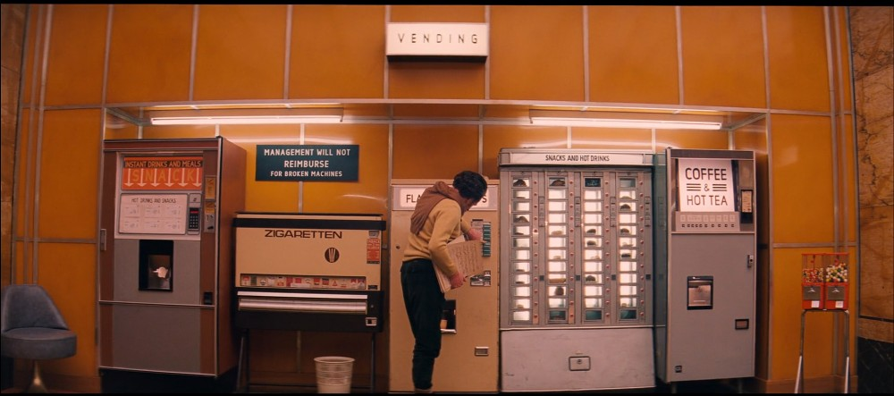
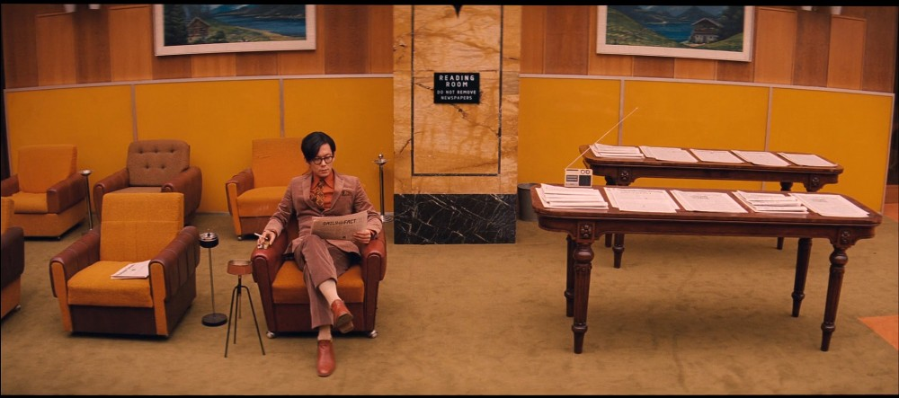
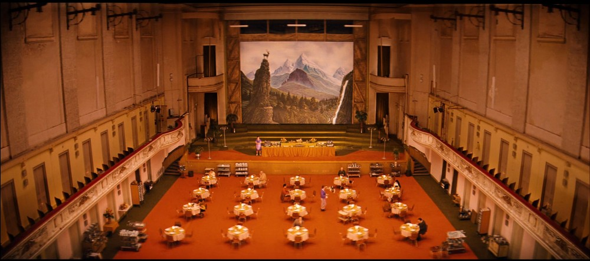
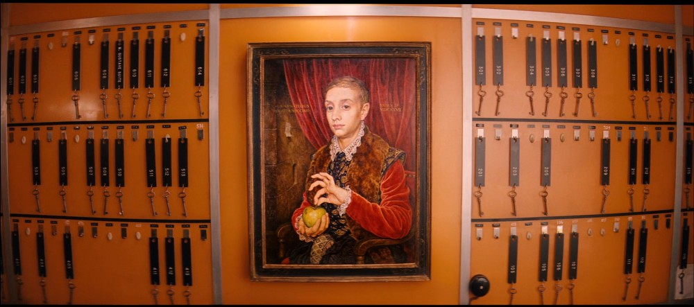
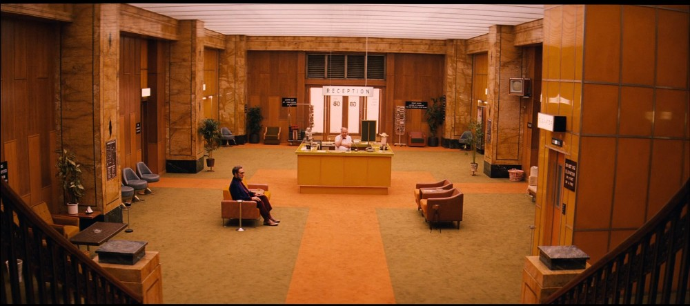
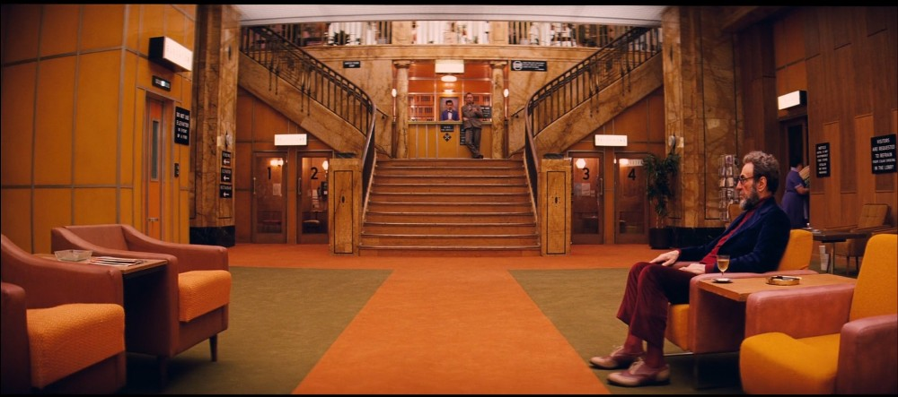
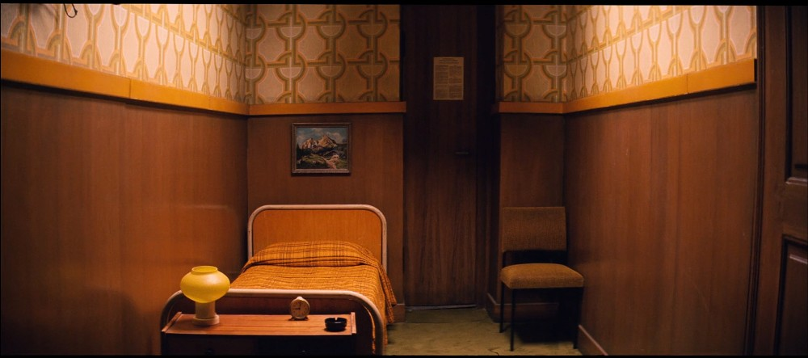
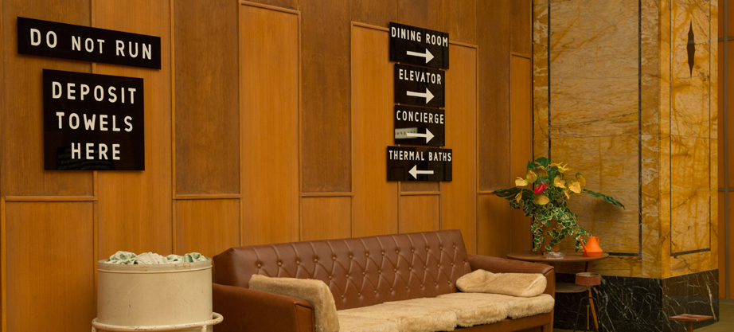
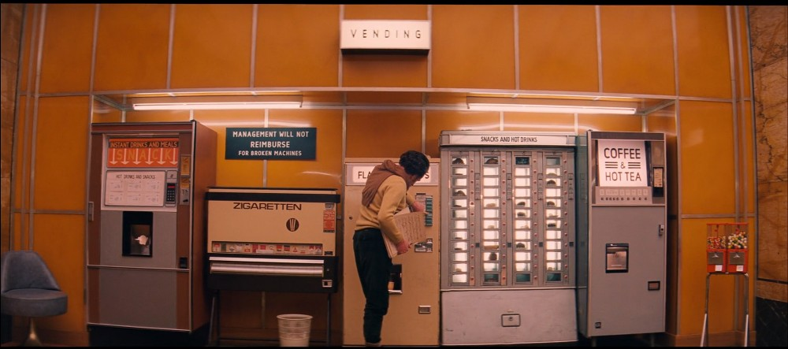
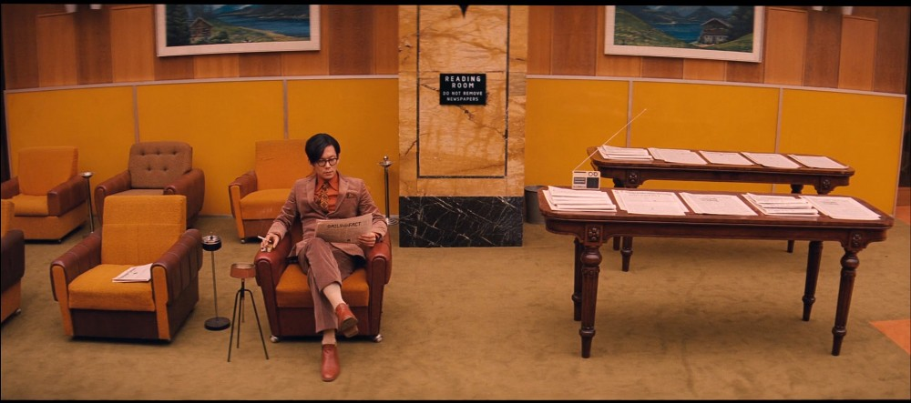
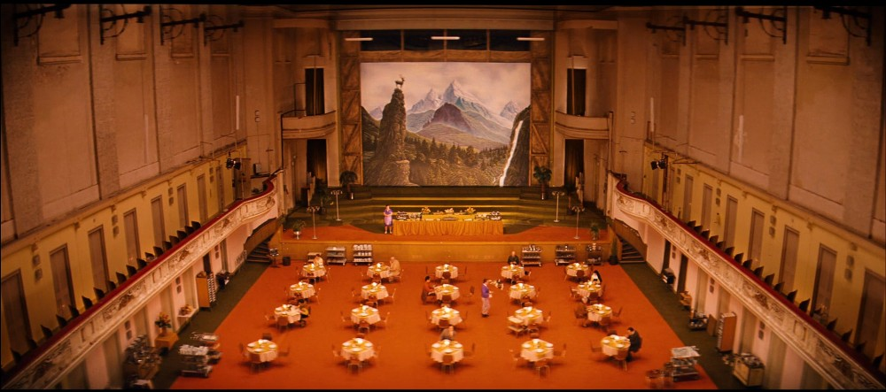
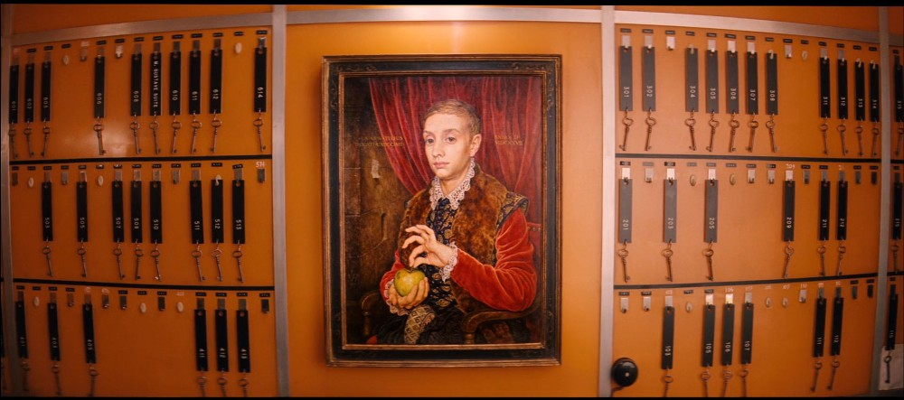
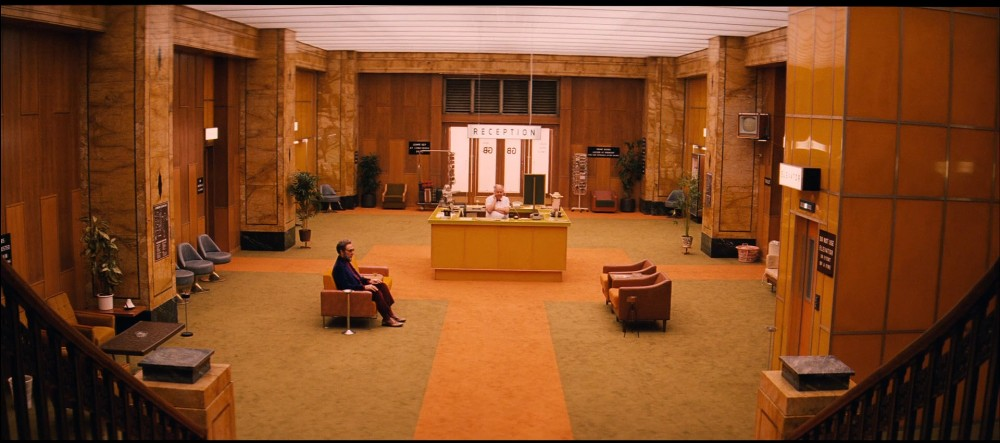
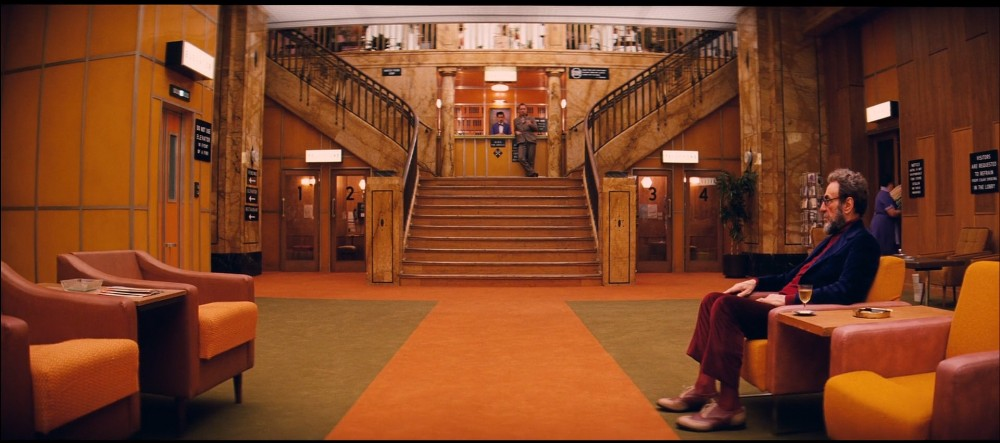
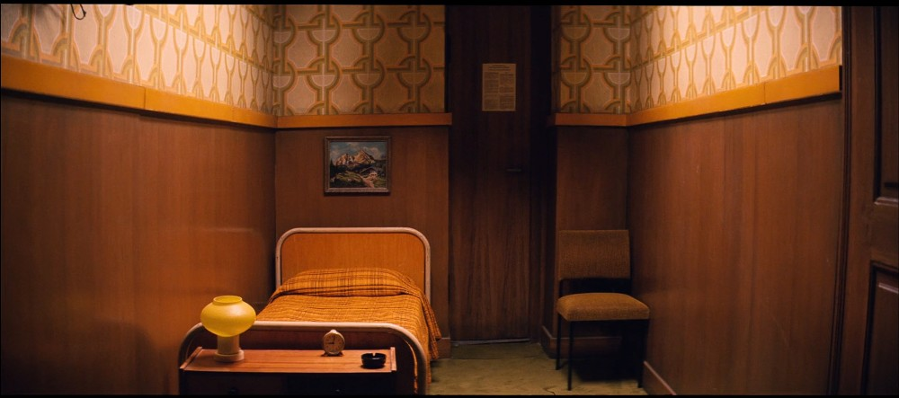
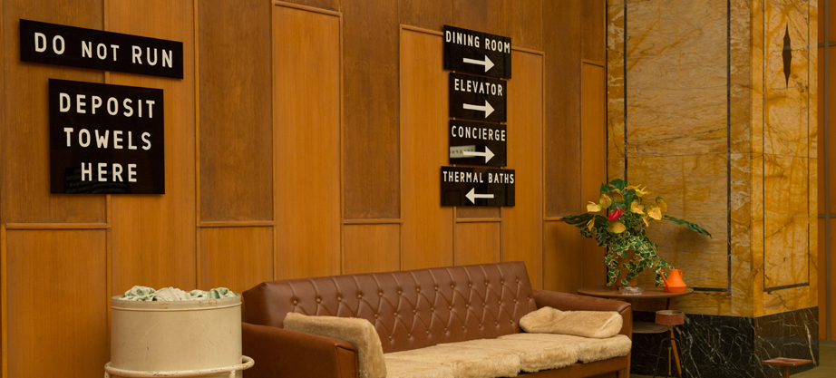